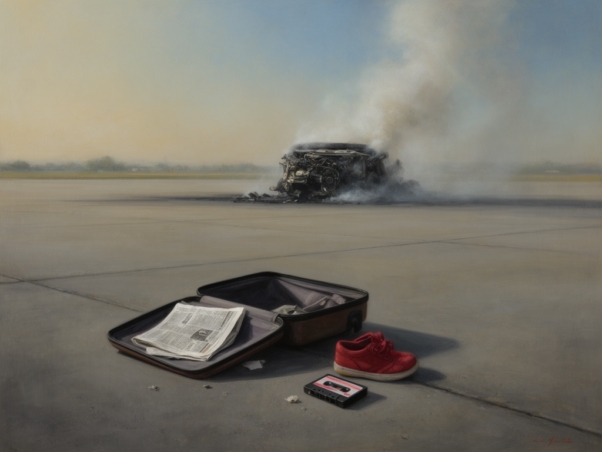

2026-08-22
Smoke in the Terminal Air (MCMLXXXV)
Anno MCMLXXXV
Oil on linen, 2024
I remember that August afternoon, the way the light held its breath before the sirens. I paint not the fire itself but the still, terrible moment after—a spilled suitcase, a child's shoe, the hold of a hand against imagined warmth. These are the ghosts we carry forward, the ones we never properly greet.
Responding to: A fire broke out on British Airtours Flight 28M at Manchester Airport, causing 55 deaths mostly due to smoke inhalation, and leading to changes to make aircraft evacuation more effective. (Wikipedia)